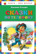

Умение фантазировать, воображать, домысливать, представлять - очень важно для любого человека. Такому умению можно и нужно учить детей как можно раньше. Используя сказки Джанни Родари, можно, двигаясь от простого к сложному, сначала побеседовать с ребенком о нем самом - кто он и что собой представляет, затем можно помочь ему придумать конец сказки, как это предлагает писатель, наконец, стоит предложить самому сочинить какую-нибудь забавную историю, используя приемы итальянского сказочника. Книга может быть рекомендована родителям, воспитателям, педагогам, гувернерам, одним словом, всем, кто воспитывает детей и, конечно, им самим - и школьникам, и дошколятам.